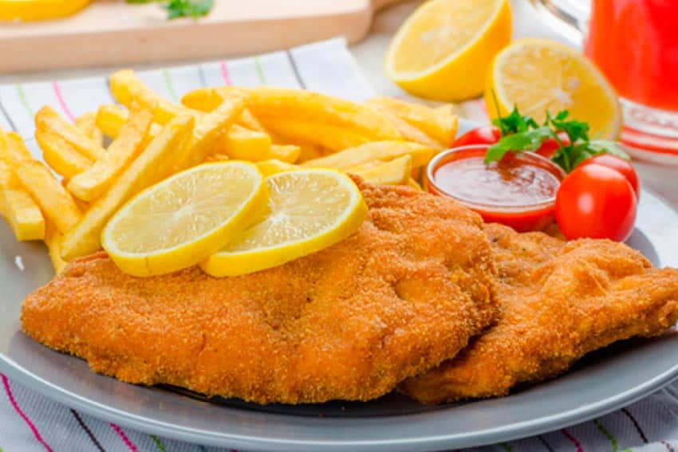

Suprema

Supremas are a relatively cheap and easy to make source of animal protein and happiness for your heart
- Chicken breast
- Finely crushed bread crumbs
- Eggs
- Spices of choice
- Start by cutting the chicken breasts in slices of medium girth
- Break two eggs and mix them in a bowl, add spices to the eggs. Salt, pepper and parsley are good choices
- Put the breaded crumbs in a flat recipient
- Soak the slices of chicken in the egg mixture
- Put the chicken on the bread crumbs, cover them in the crumbs and pat them until they are covered in a fine layer
- Optional: repeat steps 4 and 5 for extra cruchy supremas
- Put on an oiled pan in the oven and cook at 180 degrees for 10 minutes, turn them over and cook for another 10-15 minutes.